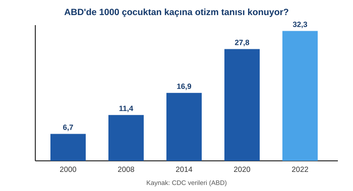

Otizm nedir?
Otizm, kişinin başkalarıyla iletişim kurma, çevresini algılama ve davranış biçimini etkileyen bir gelişim farklılığıdır. Tıpta buna otizm spektrum bozukluğu (OSB) denir. Belirtiler genellikle küçük yaşta, çoğunlukla ilk üç yaşta ortaya çıkar ve kişi büyüdükçe de devam eder.
Otizmli bireylerin ortak yönleri olsa da her biri birbirinden farklıdır. Kimisi hiç konuşmayabilir, kimisi çok iyi konuşup üniversite okuyabilir.
Spektrum ne demek?
Spektrum, otizmin herkeste aynı şekilde görülmediğini anlatan bir kelimedir. Bir renk skalası gibi düşünebiliriz. Bazı bireylerin günlük hayatta çok fazla desteğe ihtiyacı vardır, bazılarının ise çok az desteğe ihtiyacı vardır.
Otizmli bireylerin zorlandığı alanlar
- Sosyal iletişim (göz teması, sohbet başlatma, espri anlama)
- Tekrarlayan hareketler ve davranışlar
- Rutinlerin değişmesi
- Ses, ışık, dokunma gibi duyulara aşırı tepki verme
Nedenleri
Otizmin tek bir nedeni yoktur. Araştırmalar genetik faktörlerin önemli olduğunu gösteriyor. Aşıların ya da ailenin yetiştirme tarzının otizme yol açtığı doğru değildir.
Rakamlarla otizm
Aşağıdaki tabloda ABD'de yapılan taramalarda her kaç çocuktan birinde otizm tanısı konduğu görülüyor. Rakamlar yıllar içinde arttı. Bunun en önemli sebeplerinden biri otizmin artık daha iyi tanınması ve tanı koyma yöntemlerinin gelişmesidir.
| Yıl | Her kaç çocuktan 1'i | 1000 çocukta yaklaşık |
|---|---|---|
| 2000 | 150 | 6,7 |
| 2008 | 88 | 11,4 |
| 2014 | 59 | 16,9 |
| 2020 | 36 | 27,8 |
| 2022 | 31 | 32,3 |

Dünya Sağlık Örgütü ise dünya genelinde yaklaşık her 100 çocuktan 1'inde otizm olduğunu söylüyor. Ülkelere göre rakamlar değişebiliyor.
Yanlış bilinenler
| Yanlış bilgi | Doğrusu |
|---|---|
| Otizm bir hastalıktır, tedavisi vardır. | Otizm bir gelişim farklılığıdır. Eğitim ve destekle bireyin hayatı kolaylaşır. |
| Otizmli bireyler hiç duygu hissetmez. | Duygularını herkes gibi hissederler, sadece ifade etme şekilleri farklı olabilir. |
| Otizmli herkes bir konuda dahidir. | Bazılarının özel yetenekleri olabilir ama bu herkes için geçerli değildir. |
| Otizm yanlış yetiştirmeden kaynaklanır. | Ailenin davranışları otizme sebep olmaz. |
| Otizmli çocuklar arkadaşlık istemez. | Birçoğu arkadaşlık ister ama nasıl başlatacağını bilemeyebilir. |